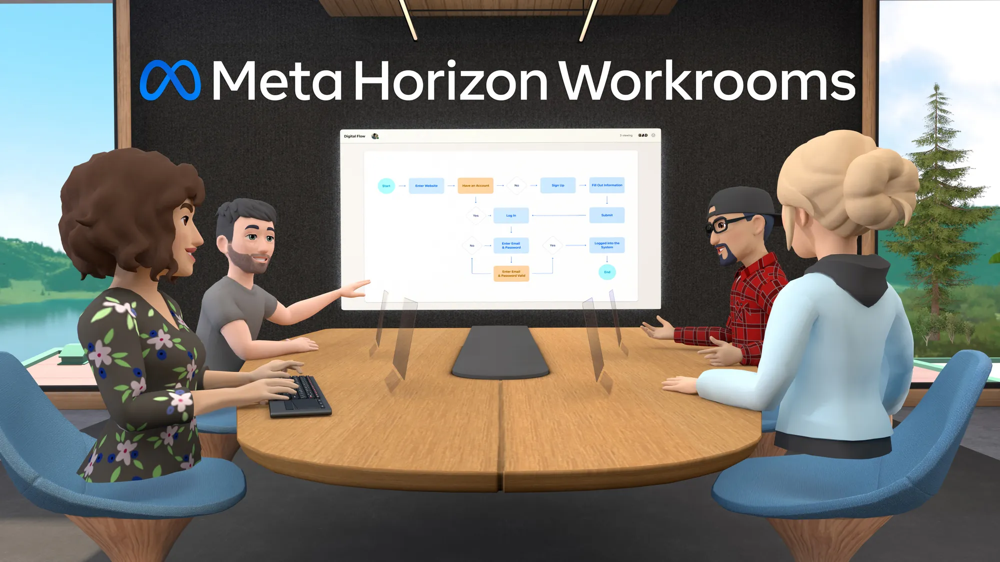
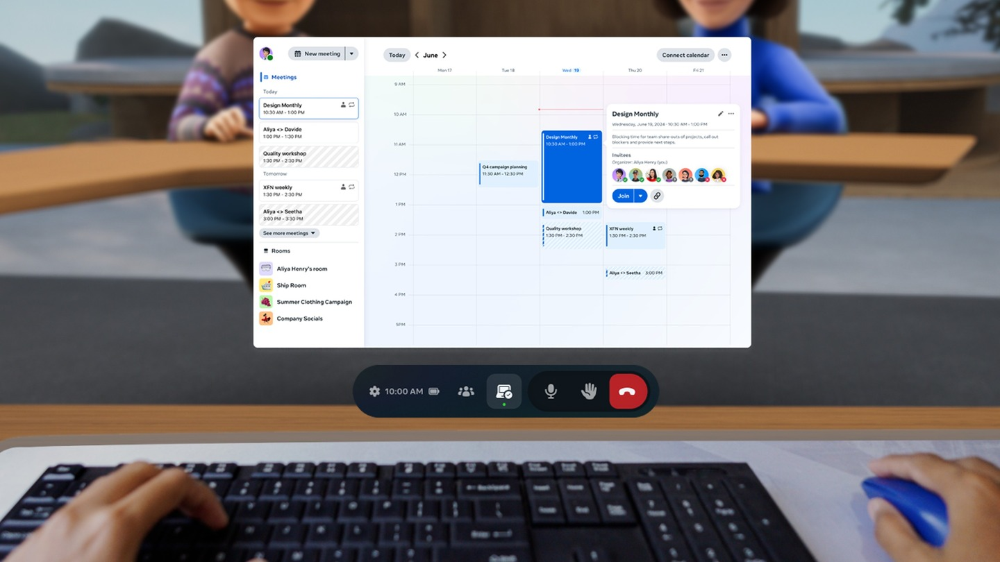

Horizon Workrooms is Meta's first party VR productivity solution, allowing users to meet and collaborate in the same virtual space.
Users can connect to their computer in the app, and use up to three large virtual screens for focused productivity sessions.
I was part of the personal productivity team, where we focused on providing a best-in-class experience for doing work in XR, making the most of the unique capabilities of the medium.
As a Product Design Prototyper, I identified and designed improvements to the app, and built high-fidelity prototypes to validate these ideas spatially.

We identified a high level of drop off during our new user onboarding flow. Through user research we learned that people were getting stuck during an interaction which required them to align the virtual workspace to their real desk.
I prototyped a more intuitive single step interaction for aligning the workspace, which resulted in an 85% reduction in drop off.
My technical knowledge allows me to effectively bridge between design and engineering. For this project, I was able to discuss rendering tradeoffs with the engineer, and deliver a finalised shader to them, avoiding any design detail from being lost in translation.
One of the most highly requested features was the ability to reposition and resize virtual screens, allowing users to customise their setup and improve ergonomics.
I built several prototypes for this feature, exploring details such as auto-scaling screens based on distance, and snapping to center.
I worked closely with engineering during implementation to ensure the interaction felt right in production.
The screen customisation features were well received by Workrooms users, allowing for longer, more comfortable work sessions in the app.
I created a prototype for testing out different seating layouts in meetings, and seeing what it felt like to sit in different positions.
This prototype allowed me to quickly experiment with dynamic scaling of the screen share and video call participants, getting a true spatial understanding of comfort and legibility.